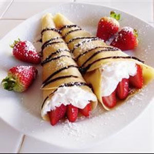
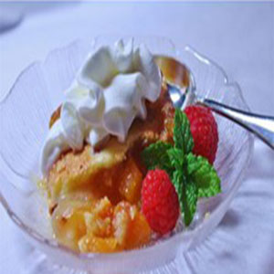
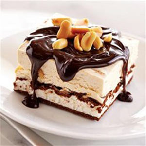
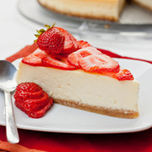

-

Crepes
×Crepes
Ingredients 4 eggs, lightly beaten
1 1/3 cups milk
2 tablespoons butter, melted
1 cup all-purpose flour
2 tablespoons white sugar
1/2 teaspoon saltDirections
In large bowl, whisk together eggs, milk, melted butter, flour sugar and salt until smooth.
Heat a medium-sized skillet or crepe pan over medium heat. Grease pan with a small amount of butter or oil applied with a brush or paper towel. Using a serving spoon or small ladle, spoon about 3 tablespoons crepe batter into hot pan, tilting the pan so that bottom surface is evenly coated. Cook over medium heat, 1 to 2 minutes on a side, or until golden brown. Serve immediately.
Tip:
Aluminum foil can be used to keep food moist, cook it evenly, and make clean-up easier. -

Peach Dessert
×Peach Dessert
Ingredients 1 1/2 teaspoons butter
4 fresh peaches - peeled, pitted, and diced
1/4 cup maple syrup
1 cup all-purpose flour
2 tablespoons all-purpose flour
1/2 teaspoon salt
1/2 cup unsalted butter
2 tablespoons sour cream
3 egg yolks, beaten
1 cup white sugar
3 1/3 tablespoons sour cream
2 tablespoons all-purpose flourDirections
Melt 1/2 tablespoon butter in a saucepan over medium heat. Stir peaches, maple syrup, and a pinch of salt together in the melted butter; cook, stirring occasionally, until the mixture is syrupy, about 10 minutes. Remove from heat and set aside to cool.
Preheat oven to 425 degrees F (220 degrees C). Grease a 10x6-inch baking dish.
Mix 1 cup plus 2 tablespoons flour and 1/2 teaspoon salt together in a bowl. Mash unsalted butter into the flour mixture until lumps are the size of small peas. Blend 2 tablespoons sour cream into the mixture; mix until you have a dough-like mixture. Pat the dough into the bottom and up the sides of the prepared baking dish.
Bake in preheated oven until browned and crust-like, about 10 minutes.
Spread peach mixture over the crust into an even layer.
Beat egg yolks, sugar, 3 1/3 tablespoons sour cream, and 2 tablespoons flour together in a small bowl; pour evenly over the layer of peaches. Cover the dish with aluminum foil.
Bake in the preheated oven for about 35 minutes. Remove aluminum foil and continue baking until a toothpick inserted into the center comes out clean, about 10 minutes. Let cool slightly before serving warm. -

Chocolate Peanut Butter Ice Cream Sandwich Dessert
×Chocolate Peanut Butter Ice Cream Sandwich Dessert
Ingredients 9 frozen ice cream sandwiches
1 (14 ounce) can EAGLE BRAND® Sweetened Condensed Milk
3/4 cup JIF® Extra Crunchy Peanut Butter
2 cups heavy cream
1 tablespoon vanilla extract
1 (12 ounce) jar Smucker's® Hot Fudge Topping
Cocktail peanutsDirections
Beat cream and vanilla in large bowl with electric mixer on medium speed until stiff peaks form. Beat in sweetened condensed milk and peanut butter on low speed until smooth.
Arrange ice cream sandwiches in 13 x 9-inch dish to form a single layer. Spread peanut butter mixture evenly over ice cream sandwich layer. Cover; freeze 4 to 6 hours until firm.
Cut into 12 squares. Top with hot fudge topping and peanuts. Serve immediately. -

Chantal's New York Cheesecake
×Chantal's New York Cheesecake
Ingredients 15 graham crackers, crushed
2 tablespoons butter, melted
4 (8 ounce) packages cream cheese
1 1/2 cups white sugar
3/4 cup milk
4 eggs
1 cup sour cream
1 tablespoon vanilla extract
1/4 cup all-purpose flourDirections
Preheat oven to 350 degrees F (175 degrees C). Grease a 9 inch springform pan.
In a medium bowl, mix graham cracker crumbs with melted butter. Press onto bottom of springform pan.
In a large bowl, mix cream cheese with sugar until smooth. Blend in milk, and then mix in the eggs one at a time, mixing just enough to incorporate. Mix in sour cream, vanilla and flour until smooth. Pour filling into prepared crust.
Bake in preheated oven for 1 hour. Turn the oven off, and let cake cool in oven with the door closed for 5 to 6 hours; this prevents cracking. Chill in refrigerator until serving.
Tip:
Aluminum foil can be used to keep food moist, cook it evenly, and make clean-up easier.